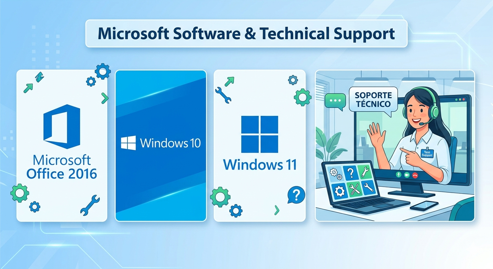

Recupera tu equipo y trabaja sin interrupciones.
Instalación y activación de Office, reinstalación de Windows, solución de errores y mantenimiento rápido para que tu PC funcione como debe.
Ver servicios Solicitar soporteSoporte con foco en resultados
- Activación segura de Office y Windows
- Recuperación de sistemas lentos o dañados
- Protección contra virus y problemas de arranque
- Asesoría clara y atención rápida
Office y activación
Instalo y activo Office de forma segura para que tus aplicaciones funcionen sin problemas desde el primer día.
Windows seguro
Reinstalo Windows, configuro el sistema y actualizo los controladores para un equipo estable y rápido.

Diagnóstico y reparación
Detecto la causa de fallas, elimino virus y soluciono errores de arranque para que regreses a trabajar rápido.
Soluciones rápidas para tu equipo
Brindo soporte técnico para problemas de Windows, instalación de Office, limpieza de virus y configuración básica. Si tu equipo está lento o tienes errores, te ayudo a recuperarlo.
- Instalación y activación de Office
- Formateo y reinstalación de Windows
- Solución de errores y actualización de drivers
- Asesoría en seguridad y mantenimiento

¿Cómo funciona?
Trabajo con procesos claros desde el primer contacto hasta la entrega del equipo listo. Cada paso está pensado para darte confianza y resultados visibles.
Evaluación rápida
Diagnóstico claro y presupuesto antes de cualquier cambio.
Trabajo seguro
Respaldo de tus archivos y procedimientos que preservan tu privacidad.
Soporte continuo
Guía post-servicio y recomendaciones para mantener rendimiento óptimo.